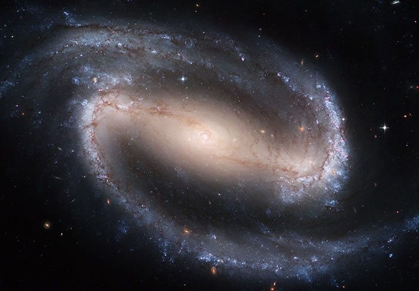
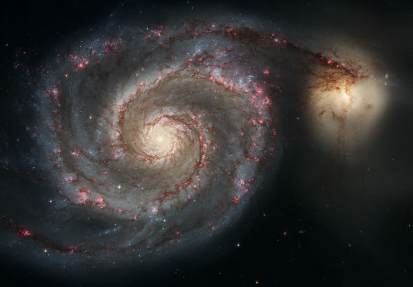

NGC 1672
NGC 1672 is a barred spiral galaxy located in the constellation Dorado. It was discovered by Scottish astronomer James Dunlop on 5 November 1826.[3] It was originally unclear whether it was a member of the Dorado Group, with some sources[4] finding it to be a member and other sources[5] rejecting its membership. However, recent tip of the red-giant branch (TRGB) measurements indicate that NGC 1672 is located at the same distance as other members, suggesting it is indeed a member of the Dorado Group.

NGC 1275
NGC 1275 (also known as Perseus A or Caldwell 24) is a type 1.5 Seyfert galaxy[3] located around 225 million light-years away from Earth[2] in the direction of the constellation of Perseus. NGC 1275 is a member of the large Perseus Cluster of galaxies. It was discovered by German-British astronomer William Herschel on 17 October 1786.

NGC 1300
NGC 1300 is a barred spiral galaxy located about 69 million light-years away in the constellation Eridanus. The galaxy is about 130,000 light-years across. It is a member of the Eridanus Cluster, a cluster of 200 galaxies,[3][4][5] in a subgroup of 2–4 galaxies in the cluster known as the NGC 1300 Group.[6][7][8] It was discovered by John Herschel in 1835.

The Whirlpool Galaxy
The Whirlpool Galaxy, also known as Messier 51a (M51a) or NGC 5194, is an interacting grand-design spiral galaxy with a Seyfert 2 active galactic nucleus.[6][7][8] It lies in the constellation Canes Venatici, and was the first galaxy to be classified as a spiral galaxy.[9] It is 31 million light-years (9.5 megaparsecs/Mpc) away and 23.58 kiloparsecs (76,900 ly) in diameter.